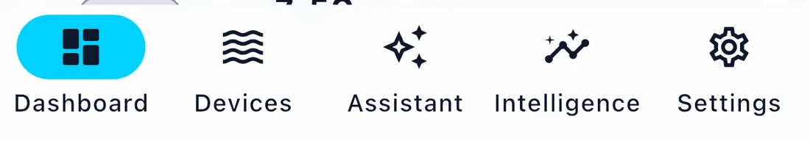

The five tabs
Cora Mobile has five tabs along the bottom. Almost everything you do lives in one of them.

Dashboard
Live readings for the selected tank. This is the main screen of the app.
If you have more than one tank, swipe left and right to move between them — the dots under the header show where you are. The tank header carries the tank name and a row of actions: feed mode, the Reef Buddy briefing, sharing, and a pencil that opens the tank profile. Editing the dashboard is a separate control, Edit dashboard, at the foot of the page.
Full detail: Reading your dashboard.
Devices
Everything you have connected, grouped by brand. Each group collapses, so a reef room full of equipment stays readable.
This is where you add new equipment, rename it, assign it to a tank, and remove it. Full detail: Adding, editing and removing devices.
Assistant
Ask Cora about your tank in plain language, by typing or by voice. It can see your live readings, your history and your ICP results, so "why is my alkalinity falling?" is a question it can actually answer about your tank.
Full detail: Asking Cora.
Intelligence
Your lab work and your long view. Upload an ICP test and Cora reads it, tracks every element over time, and tells you what moved since last time. Health Reports are a deeper periodic assessment of the whole system.
Full detail: ICP and health reports.
Settings
Account, tanks, dosing products, the Assistant, notifications, automation, and your plan.
Full detail: Settings.
The first-run tour
The first time you open the dashboard, Cora points out the parts of the screen in turn. It runs once.
To see it again, use Settings → About → Replay tips. It restarts the tour and takes you to the dashboard so it begins straight away — useful after an update, or when handing the app to someone else.
Two controls outside the tabs
The bell, top right, is your notification history — every alert Cora has raised, newest first. The number on it is how many you have yet to read.
The Journal button floats over the bottom right of the Dashboard. Tap it to write down what you just did — a water change, a new coral, a dose you changed. See The journal.
Written for Cora Max 0.28.37 and Cora Mobile 0.5.55.
Still stuck? Email cora@coraiq.tech and we'll help.